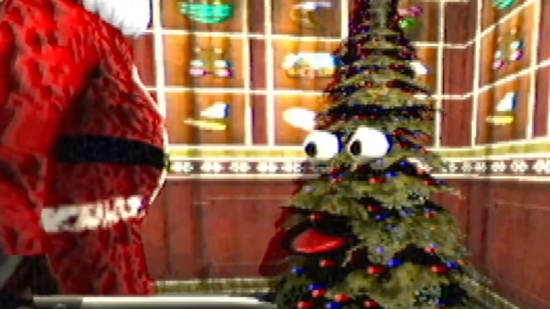
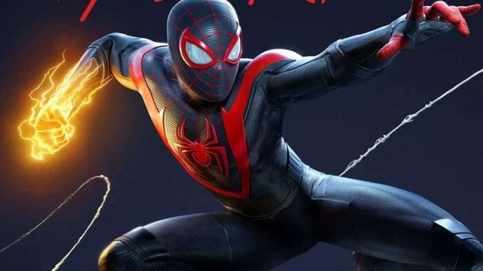

Fighting angles on christmas day
Like a dragon Gaiden, the man who erased his name is a game that came out on November 9, 2023. Its a spinoff from the yakuza series. This spin-off is very intresting because it shifts the focus to a new protaginist and shows the story that explores the story from a different angle
Yet again the yakuza game delivers like having a compelling story and intresting combat mechanics, but this spinoff also includes new and fresh mechanics. Technically its a spin off but i personally think this game can very well be its stand alone game, it does shine light on some characters we heard about but not seen in the main story. I think this is a very accesible game entry into the yakuza universe and can be played without playing the main game Read more...

Planning a killing spree for the holidays?
Persona 5 tactica, it hit the shelves on november 17, 2023, made a strategic twist into the persona 5 universe. Developed by atlus, this tactical spin-off holds the beloved narritive and stylish aesthetics of persona 5 into a turn based tactical combat game. Though, given the array of Persona spin-off, theres been a sense of 'Persona 5 fatique'. Its still a very good game but many fans are eagerly waiting for the next big installment, persona 6.

It does introduce a certain strategic depth that the main game didnt have. The game requires players to position their members and exploit the enemies weaknesses. Which is also in the main game, but it adds a bit of complexity.
Everything for christmas dinner with family
Baldur's Gate 3, the highly aticipated sequel to a classic rpg with the same name. Its developed by Larian Studios's, this game made a new standards with its rich and immersive fantasty world, filled with intrigue,danger, and a myriad of chouces that shape the narrative.
I'm absolutley captivated by the attention to detail, from the intricately designed dcharacter to the vast and atmospheric environments. The narrative is just a roller coaster of emotions featuring unexpexted twists and turns that keep me on the edge of my seat. Its definitly not without its challenges and bugs, but the team has been listening very well to the fanbase to fix these and add feautures to the game that players asked for.
